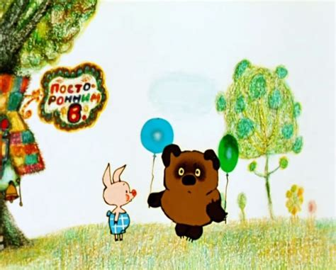

Персонажи:
- Винни-Пух
- Ослик Иа
- Сова
- Кролик
Винни-Пух
Винни-Пух (англ. Winnie-the-Pooh) -плюшевый мишка, персонаж повестей и стихов Алана Александра Милна (цикл не имеет общего названия и обычно тоже называется «Винни-Пух», по первой книге). Один из самых известных героев детской литературы ХХ века.
В 1960-e-1970-е годы, благодаря пересказу Бориса Заходера «Винни-Пух и все-все-все», а затем и фильмам студии «Союзмультфильм», где мишку озвучивал Евгений Леонов, Винни-Пух стал очень популярен и в Советском Союзе. Первые иллюстрации и эскизы книги были сделаны известным карикатуристом Эрнестом Шепардом. Аукционный дом Sotheby’s неоднократно продавал его рисунки к сказке Алана Милна: так, 10 июля 2013 года шесть эскизов (первоначально предполагалось реализовать восемь работ) были проданы почти за полмиллиона фунтов стерлингов. Плюшевый медведь Винни-Пух, принадлежавший Кристоферу Робину, сейчас находится в детской комнате Нью-Йоркской библиотеки.